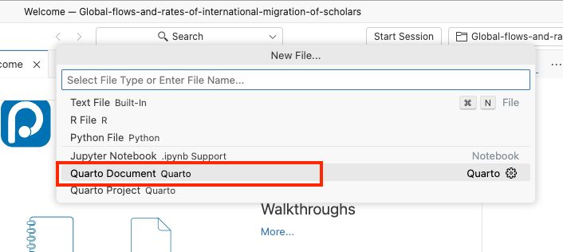
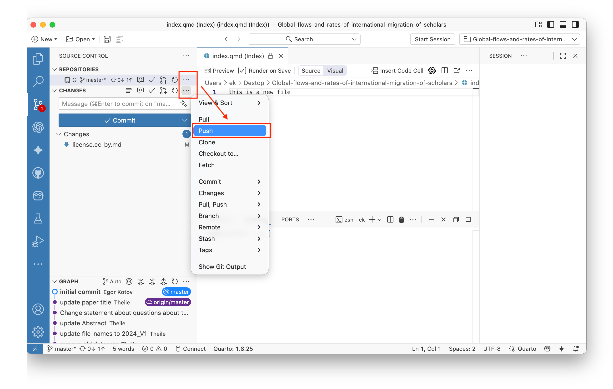
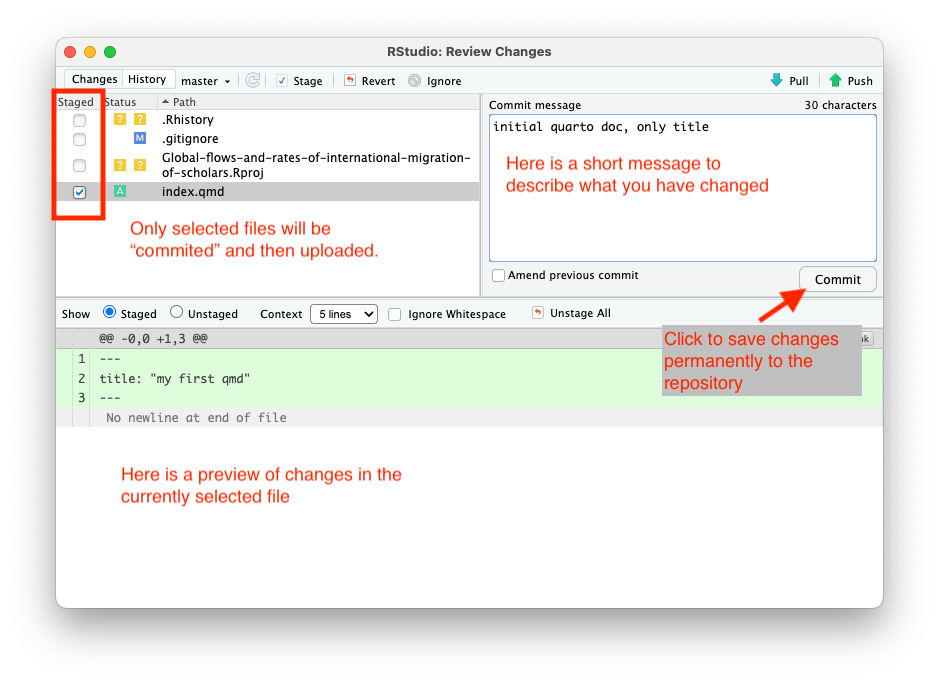
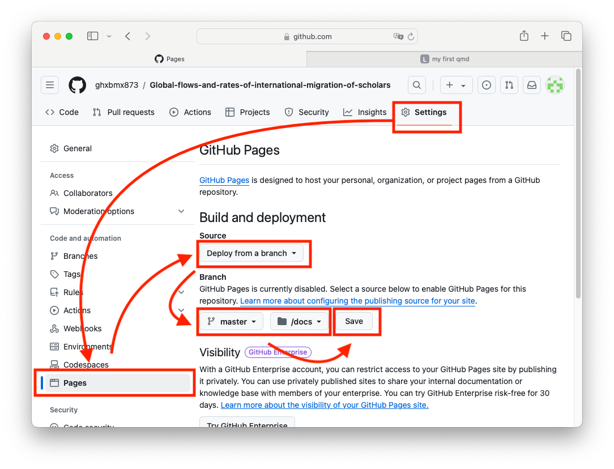
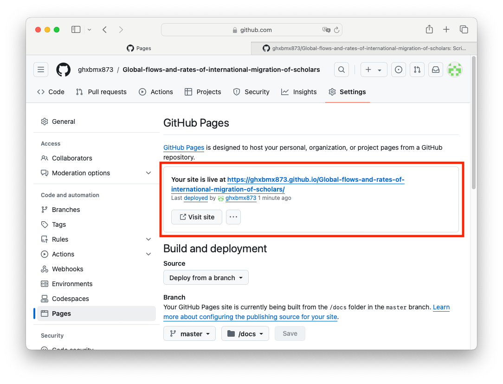

![]()
shiny::tags$iframe(src = "media/interactive/flowmap_widget.html", width = "100%", height = "600px")üìä Workshop Task
Your task is to create a reproducible summary report with key statistics and a flowmap using the Scholarly Migration Database. This is a beginner level task.
If you are feeling especially confident, you can use the data from the The Human Migration Database, which you can download via the interactive web app (see last the tab for downloads). Warning: this is likely take more time than with the Scholarly Migration Database, as there are more data columns and you will spend more time reading the codebook. So only go for this task if the R programming part and Quarto are too easy for you. You can also explore https://closeread.dev/ for creating “storytelling” style of your published document to showcase your analysis even better (see the gallery here).
Final goal
The final goal is to have a repository on GitHub with:
a reproducible Quarto (
*.qmd) document in the root of the repositoryan
htmlfile created from the*.qmdfile above in thedocsfolder of the repositorya
README.mdfile in the root of the repository that briefly describes the project (e.g. specifies that this is an assignment done as part of EDSD linking back to EDSD website, or to this workshop materials, etc. )post the link to your repository and/or website in
Issuesof this repository: https://github.com/e-kotov/2025-EDSD-open-science-quarto-github/issues
Requirements:
The Quarto document can be rendered without errors into an
htmlfileThe document contains R code to load the data and perform any neccessary data transformation for visualisation. Instead of commenting the code, use plain or markdown-formatted text outside the code blocks.
The document contains at least two figures summarizing the flows data (e.g. a histogram, a scatter plot, etc.)
The document contains a flowmap (either static with
{flowmapper}or interactive with{flowmapblue}) showing the migration flows of scholars between countries.The document layout uses some of the custom figure placement options from Article Layout.
Step by step instructions
Make sure you went through the setup steps, and therefore have all the tools and a GitHub account.
1. Cloning the repository
1.1. Clone using your GitHub account
- Go to the repository of the Scholarly Migration Database and “Fork” it into your GitHub account.
Open
Positronand create a new folder (project).- Create new Folder (Project) from the menu:
Alternatively, from the Command Palette (
CMD+Shift+PonmacOSorCTRL+Shift+PonWindows. By the way,RStudioalso has a similar Command Palette accessible with the same shortcut):- Copy the link to your repository from the web and paste it in the prompt, also choose local folder where you want to save the repository:
- You may get a warning about trusting or not trusing the contents of the folder. This time feel free to choose “Trust”, as it is your own repository. In other cases use your judgement.

- If this is your first time using git and GitHub on this computer, you may get a prompt like this. You may also get it later, when you try to push (upload) any changes you make in the repository back to GitHub:
You may not get this prompt if the repository you are downloading is public (which in this case when you have created a fork, it is). You will get this prompt when you try to push (upload) any changes you make in the repository back to GitHub.
You should choose the blue button “Sign in with your browser”.
- Complete the authentication in the web browser with your GitHub account:
Open
RStudioand create a new project.- Choose “Version Control”:
- Choose “Git” as your version control system:
- Copy the link to your repository from the web and paste it in the prompt:
- If this is your first time using git and GitHub on this computer, you may get a prompt like this. You may also get it later, when you try to push (upload) any changes you make in the repository back to GitHub:
You may not get this prompt if the repository you are downloading is public (which in this case when you have created a fork, it is). You will get this prompt when you try to push (upload) any changes you make in the repository back to GitHub.
You should choose the blue button “Sign in with your browser”.
- Complete the authentication in the web browser with your GitHub account:
You only need to do this once, as this sets up your local git installation to use your GitHub acccount. So when you work with another online repository, you should just be able to access it without those extra steps.
1.2. Fallback if everything else fails, just download the repository
If nothing works for you, feel free to just download the Scholarly Migration Database repository manually.
2. Explore the data
- Create a new Quarto document in the root folder of the cloned or downloaded repository:
Using the menu File->New File... or Command Pallette (CMD+Shift+P on macOS or CTRL+Shift+P on Windows) create new Quarto document:

You will get:
Using the basic R and Quarto syntax (see intro reference of basic Quarto syntax here), list the packages you need to be loaded in the first chunk/block of code.
Add more chunks/blocks of code to load the data (you may use either openalex_2024_V1_scholarlymigration_countryflows_enriched.csv or scopus_2024_V1_scholarlymigration_countryflows_enriched.csv) and explore it. You may ignore the code visibility options for now. Just leave default options for code blocks by not addint any options at this point. Use
{dplyr}for data manipulation and{ggplot2}for data visualization.
- Create a new Quarto document in the root folder of the cloned or downloaded repository:
Either in the top left of RStudio:
Or in the bottom right in the Files pane:
Using the basic R and Quarto syntax (see intro reference of basic Quarto syntax here), list the packages you need to be loaded in the first chunk/block of code.
Add more chunks/blocks of code to load the data (you may use either openalex_2024_V1_scholarlymigration_countryflows_enriched.csv or scopus_2024_V1_scholarlymigration_countryflows_enriched.csv) and explore it. You may ignore the code visibility options for now. Just leave default options for code blocks by not addint any options at this point. Use
{dplyr}for data manipulation and{ggplot2}for data visualization.
3. Spatial aspect of the migration data
Apart from the histograms, scatterplots or other plots, it is also useful to look at your data on a map like so:
The data in the Scholarly Migration Database does not contain coordinates, but has country names and their ISO codes. So you can combine this data with some other datasource that coordinates or boundaries for countries and their ISO codes.
3.1 Packages for spatial data and flow mapping
Here is a list of packages that you need to map the migration data:
packages <- c(
"sf", # for working with spatial data
"spData", # to easily get world boundaires
"countrycode", # to convert between iso2 and iso3 country codes
"flowmapblue", # for interactive flow mapping
"flowmapper" # for static flow mapping using ggplot2
)
install.packages(packages)
Note
You only need to install the packages once, do not keep the code to install the packages in your Quarto document, at least not as it is presented above. This code does NOT check if the packages are already installed. So if you keep this code in your Quarto document, the listed packages will be downloaded every time you render the document into html, pdf, or any other format. To learn more about package management in R, see the tutorials in Projects’ workflow for reproducibility and replicability using R.
library(sf)
library(spData)
library(countrycode)
library(flowmapblue)
library(flowmapper)
library(tidyverse)3.2. How to prepare the data for flow mapping
For mapping the flows you will need the coorindates of the countries.
An easy way to create these coordinates is by getting the data on country boundaries from the {spData} package:
countries <- spData::world
glimpse(countries)Rows: 177
Columns: 11
$ iso_a2 <chr> "FJ", "TZ", "EH", "CA", "US", "KZ", "UZ", "PG", "ID", "AR", …
$ name_long <chr> "Fiji", "Tanzania", "Western Sahara", "Canada", "United Stat…
$ continent <chr> "Oceania", "Africa", "Africa", "North America", "North Ameri…
$ region_un <chr> "Oceania", "Africa", "Africa", "Americas", "Americas", "Asia…
$ subregion <chr> "Melanesia", "Eastern Africa", "Northern Africa", "Northern …
$ type <chr> "Sovereign country", "Sovereign country", "Indeterminate", "…
$ area_km2 <dbl> 19289.97, 932745.79, 96270.60, 10036042.98, 9510743.74, 2729…
$ pop <dbl> 885806, 52234869, NA, 35535348, 318622525, 17288285, 3075770…
$ lifeExp <dbl> 69.96000, 64.16300, NA, 81.95305, 78.84146, 71.62000, 71.039…
$ gdpPercap <dbl> 8222.2538, 2402.0994, NA, 43079.1425, 51921.9846, 23587.3375…
$ geom <MULTIPOLYGON [°]> MULTIPOLYGON (((-180 -16.55..., MULTIPOLYGON ((…So this spatial data is just like a regular data.frame/tibble, but with an extra column with geometry data. Therefore, you can plot this data using ggplot2:
countries |>
ggplot() +
geom_sf()You can also include several layers in the same plot:
ggplot() +
geom_sf(data = countries) +
geom_sf(data = st_point_on_surface(countries), color = "darkred")For flow mapping, you only need one point per country, so you only need a center (or more formally a ‘centroid’, but st_point_on_surface() function produces a special kind of centroid that is guaranteed to be placed on the polygon surface and never placed outside irregularly shaped polygon) of each country’s polygon. Here is how you can do it:
countries_centroids <- countries |>
st_centroid() |> # finds a center of each country'spolygon
st_coordinates() |> # extracts numeric coorindates from the POINT geometry
as.data.frame() |> # converts the matrix to a data.frame
setNames(c("lon", "lat")) |> # renames the columns
cbind(countries) |> # adds back all the columns (except for geometry) form `countries`
select(iso_a2, lon, lat, name_long) # only selects a few columns that we really need
glimpse(countries_centroids)Rows: 177
Columns: 4
$ iso_a2 <chr> "FJ", "TZ", "EH", "CA", "US", "KZ", "UZ", "PG", "ID", "AR", …
$ lon <dbl> 178.56842, 34.74198, -12.18574, -96.39551, -103.57290, 67.23…
$ lat <dbl> -17.3156217, -6.2505643, 24.2783849, 60.4767578, 44.7559814,…
$ name_long <chr> "Fiji", "Tanzania", "Western Sahara", "Canada", "United Stat…You may freely reuse this code above in your Quarto report.
The data format you get is ideal for both {flowmapblue} and {flowmapper} packages. You only need to tweak the column names of the countries_centroids data.frame before using it with either of these packages. You can see relevant package documentation for more details. Alternatively, you can follow tutorials for {flowmapper} and {flowmapblue}.
3.3. Country codes
You will find that the country code data in the Scholarly Migration Database does not match with the country names in the countries data.frame. Scholarly migration database uses ISO 3166-1 alpha-3 codes, and countrycode uses the ISO 3166-1 alpha-2 codes. So you need to convert the country names in the countries data.frame to ISO 3166-1 alpha-3 codes.
You can do this conversion using the countrycode package like so:
library(countrycode)
# assuming your data.frame is called `scopus_country_flows`
scopus_country_flows <- scopus_country_flows |>
mutate(
iso2codefrom = countrycode(iso3codefrom,
origin = "iso3c",
destination = "iso2c"),
iso2codeto = countrycode(iso3codeto,
origin = "iso3c",
destination = "iso2c")
)3.4. Hints on plotting the flows
{flowmapper}
To plot the flows statically with {flowmapper}, you only need a regular code chunk, same as you would have for a ggplot2 plot.
Feel free to adapt this tutorial, but use the Scholarly Migration Database data instead of the mobility data used there.
{flowmapblue}
To create interactive flow maps with the {flowmapblue}, you will need a free MapBox account. Feel free to adapt this tutorial, but use the Scholarly Migration Database data instead of the mobility data used there.
To include the interactive plot with {flowmapblue}, you may need a somewhat more sophisticated code chunk. See the instructions below.
If you created an interactive flowmap like so:
flowmap <- flowmapblue(locations = locations, flows = flows, mapboxAccessToken = mapbox_access_token)But simply printing the flowmap object in a code block breaks your entire Quarto document, here is what you need to do.
Save the flowmap to an html file:
htmlwidgets::saveWidget(flowmap, "flowmap.html")Then include the html file in your Quarto document like so:
library(shiny)
shiny::tags$iframe(src = "flowmap_widget.html", width = "100%", height = "600px")4. Create your final document
Once you have figured out which summary plots and which flow map you would like to include in your final document, create a copy of your draft document that you were working with and clean it up. Only keep the code that you absolutely need for the document to be rendered without errors. Name this copy index.qmd.
Adjust the code visibility in your final document to your liking, using the Quarto documentation on HTML blokcs and code execution.
Create a file named _quarto.yaml in the root of the repository and add the following to it:
#| eval: false
project:
output-dir: docsMake sure you respect the indentation (i.e. number of tabs/spaces before output-dir) of the YAML file.
Then render your final Quarto document into an html file, it should end up in the docs folder with the name index.html.
5. Save changes and push them to GitHub
You can edit and save the files in your repository as much as you want locally. However, to save a certain clean version of your code or document to the git repository and upload it to GitHub, you also need to commit these changes. commit command “bakes” the changes you made to any files you edited permanently in the repository history. It is like a checkpoint for “undo” and “redo”. A brief overview of the git workflow is well summarized here, but will also be demoed and discussed in class.
5.1. Before the first commit
Before the first commit, you need to execute a few commands in terminal (you can do it either in your operating system’s terminal app or simply in RStudio or Positron built-in terminal).
git config --global user.name 'Your Name'
git config --global user.email 'you54385-2@345234543example.com'Beware which name and email you set there. The name and email are public in git to attribute contributions to specific individuals, to ensure transparency and accountability. The email does not have to be the same email that you used to sign up for GitHub. It can even be a non-existing email. However this email will be publicly available. It will not be visible on the GitHub website, but anyone who clonse a public repository will be able to see it with a git log command:
5.2. First commit
To save your changes to the local git repository that you have open in Positron, find the Source Control panel on the left.
You can select files that had changes or that were newly created or deleted. You can preview changes and select files that you want to save (commit) and later upload to GitHub (via Push). You can select one or more files to be staged, and only these files will be committed when you click the Commit button. Also, add a short comment to your commit dsecribing the changes, it will appear in the repository history.
After clicking the “Commit” button, the staged files will disappear from the list of changed files. You will then be able to Push the changes to GitHub.

To save your changes to the local git repository that you have open in RStudio, find the Git panel in the top right and click the Diff button.
This will open a new window where you can preview changes in the files that you made since last commit (which in this case was made by the author of the original repository, since you have just forked it).

Here you can select files that had changes or that were newly created or deleted. You can preview changes and select files that you want to save (commit) and later upload to GitHub (via Push). You can select one or more files to be staged, and only these files will be committed when you click the Commit button. Also, add a comment to your commit dsecribing the changes.
After clicking the “Commit” button, you will see this screen.
Close this window and upload your commited changes to GitHub by clicking the “Push” button.

You will see the upload screen:
You can now close this window and the review changes window, and go to your GitHub repository to see the changes.
Tip
Can you undo a commit? Yes, you can. But be careful when doing this, as it may lead to loss of work if you are not careful. Try asking your favourite large language model how do do this safely and what could be the implications.
Also, if you are collaborating with someone on a GitHub repository, learn to use branches and pull requests to avoid overwriting each other’s work or getting erroes when trying to push changes.
5.3. Publish the html file
Once you have an index.html file in the docs folder, you can go to the repository settings and publish it to the web.

You will need to wait a few minutes. You only have one page, so it should not take too long. Reload the settings page and you should see your web link:

You can also go to your repository homepage and add this link in the right side of the repository page:
6. Submit
Post the link to your repository and/or website in Issues of this repository: https://github.com/e-kotov/2025-EDSD-open-science-quarto-github/issues
Citation
BibTeX citation:
@online{kotov2025,
author = {Kotov, Egor},
title = {Open {Science} and {Reproducibility} with {Quarto,} {GitHub,}
and {R} 2025},
date = {2025-10-21},
url = {https://www.ekotov.pro/2025-EDSD-open-science-quarto-github/task.html},
doi = {10.5281/zenodo.17401408},
langid = {en}
}
For attribution, please cite this work as:
Kotov, Egor. 2025. “Open Science and Reproducibility with Quarto,
GitHub, and R 2025.” October 21, 2025. https://doi.org/10.5281/zenodo.17401408.